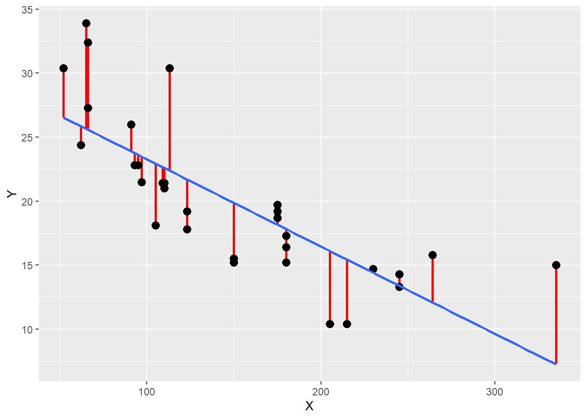

Warning: Using `size` aesthetic for lines was deprecated in ggplot2 3.4.0.
ℹ Please use `linewidth` instead.

Il est possible d’investiguer l’existence d’une relation linéaire entre deux variables en modélisant cette relation à l’aide d’une équation de type \(Y = aX + b\), et en calculant certaines statistiques qui rendent compte du niveau de correspondance entre le modèle linéaire et les données étudiées. Ces statistiques sont le coefficient de détermination, noté \(R^2\), et l’erreur typique d’estimation, dont on gardera l’acronyme anglais \(SEE\) (pour Standard Error of Estimate).
Le coefficient de détermination, noté \(R^2\), représente la part de variance de la variable \(Y\) expliquée par le modèle linéaire. La formule de ce coefficient peut être présentée comme ceci :
\[R^2 = 1 - {\frac {Var(\hat{Y} - Y) } {Var(Y)}} = 1 - {\frac {Var(RES)} {Var(Y)}}, \] où \(\hat{Y}\) désigne les prédictions faites à partir du modèle, et \(Y\) désigne les valeurs réelles que l’on a cherché à prédire à partir du modèle. Le terme \(\hat{Y} - Y\) (ou \(RES\)) doit se concevoir comme une variable contenant toutes les différences \(\hat{Y}{i} - Y{i}\) qu’on appelle des résidus. Ainsi, le terme \({Var(\hat{Y} - Y) }\) désigne la variance des résidus (ou encore la variance des erreurs). Au final, le ratio \({\frac {Var(\hat{Y} - Y) } {Var(Y)}}\) traduit la part de variance non expliquée (non détectée) par le modèle, et le \(R^2\) se calcule en faisant 1 moins ce ratio. (À noter qu’on peut trouver ailleurs d’autres manières de présenter ce coefficient \(R^2\), avec des formules initiales différentes, mais mathématiquement, les méthodes restent équivalentes).
La Figure 6.1 illustre la notion de résidu et ce qu’elle représente dans le calcul du \(R^2\). Sur cette figure, les points représentent les valeurs \(Y{i}\) en fonction des valeurs \(X{i}\), la ligne bleue représente le modèle de régression linéaire (i.e., toutes les valeurs \(\hat{Y}{i}\) qui seraient prédites à partir du modèle et des valeurs \(X{i}\)), et les segments rouges représentent les résidus (i.e., les différences qu’on a à chaque fois entre \(\hat{Y}{i}\) et \(Y{i}\)). Pour un modèle donné, plus ces segments rouges seront nombreux et grands, plus cela signifiera que les erreurs de prédiction du modèle sont nombreuses et grandes, que la part de variance non expliquée par le modèle est grande, et que la valeur du \(R^2\) pour ce modèle est éloignée de 1. Ainsi, le coeffient \(R^2\) peut aller de la valeur 0 (signifiant que le modèle n’explique aucune variation de \(Y\)), à la valeur de 1 (signifiant que le modèle explique toute les variations de \(Y\)). Plus la valeur de \(R^2\) d’un modèle linéaire se rapprochera de 1, plus cela suggérera que la relation étudiée est effectivement linéaire. Le coefficient de détermination \(R^2\) associé à un modèle linéaire est mathématiquement lié au coefficient de corrélation de Pearson (\(r\)), \(r\) étant la racine carrée du \(R^2\).
Warning: Using `size` aesthetic for lines was deprecated in ggplot2 3.4.0.
ℹ Please use `linewidth` instead.Pour déterminer le \(R^2\) d’un modèle linéaire avec le logiciel R, il faut d’abord créer ce modèle à l’aide de la fonction lm(). L’usage simple de cette fonction, tel que montré ci-dessous, permet de prendre connaissance des coefficients du modèle. Dans les résultats issus de l’exemple ci-dessous, l’ordonnée à l’origine est située sous (Intercept), et le coefficient directeur est situé sous le nom de la variable \(X\) du modèle, ici hp. Dans l’exemple ci-dessous, qui utilise le jeu de données mtcars, le modèle nous indique que lorsque hp vaudra 0, l’estimation de mpg vaudra 30.09886, et que pour chaque augmentation d’unité de hp, on aura une diminution de -0.06823 unité de mpg.
lm(mpg ~ hp, data = mtcars)
Call:
lm(formula = mpg ~ hp, data = mtcars)
Coefficients:
(Intercept) hp
30.09886 -0.06823 Pour plus de confort dans l’écriture de la suite du code, il peut être intéressant d’associer le modèle crée avec la fonction lm() à un nom. Pour accéder aux différentes informations statistiques résumant le modèle, on peut alors utiliser la fonction summary() avec le nom choisi pour le modèle.
Call:
lm(formula = mpg ~ hp, data = mtcars)
Residuals:
Min 1Q Median 3Q Max
-5.7121 -2.1122 -0.8854 1.5819 8.2360
Coefficients:
Estimate Std. Error t value Pr(>|t|)
(Intercept) 30.09886 1.63392 18.421 < 2e-16 ***
hp -0.06823 0.01012 -6.742 1.79e-07 ***
---
Signif. codes: 0 '***' 0.001 '**' 0.01 '*' 0.05 '.' 0.1 ' ' 1
Residual standard error: 3.863 on 30 degrees of freedom
Multiple R-squared: 0.6024, Adjusted R-squared: 0.5892
F-statistic: 45.46 on 1 and 30 DF, p-value: 1.788e-07Dans la liste d’informations données suite à l’activation du code, on retrouve notamment l’ordonnée à l’origine (Intercept) et le coefficient directeur (hp), et on peut trouver le coefficient \(R^2\) en face de l’écriture Multiple R-squared. On peut aussi y voir l’erreur typique d’estimation en face de l’écriture Residual standard error.
L’erreur typique d’estimation, ou \(SEE\), représente l’écart-type des erreurs d’estimation associées à l’utilisation d’un modèle. Son unité est donc celle de la variable \(Y\) que l’on a cherché à prédire avec le modèle. La formule suivante permet d’expliquer son calcul à partir de données prélevées sur un échantillon :
\[ SEE = \sqrt{\frac{\sum_{i=1}^{N}(RES{i} - \overline{RES})^2}{N-2}}, \]
où \(RES{i}\) désigne le résidu pour une observation donnée, \(\overline{RES}\) la moyenne des résidus, et \(N\) le nombre d’observations.
Il est possible d’extraire l’ordonnée à l’origine et la pente (i.e., le coefficient directeur) du modèle de régression, le coefficient \(R^2\), et la statistique \(SEE\), à partir de la liste d’informations obtenue avec la fonction summary(). Le code ci-dessous montre comment faire cela avec l’exemple concernant le jeu de données mtcars :
# Extraction de l'ordonnée à l'origine
intercept <- summary(model)$coefficients[1]
intercept[1] 30.09886# Extraction du coefficient directeur
slope <- summary(model)$coefficients[2]
slope[1] -0.06822828# Extraction du R2
R2 <- summary(model)$r.squared
R2[1] 0.6024373# Extraction de SEE
SEE <- summary(model)$sigma
SEE[1] 3.862962Une fois extraites et associées à des noms, ces informations peuvent ensuite être réutilisées avec le package ggplot2 et la fonction annotate() pour compléter le graphique initial avec des informations statistiques (cf. Figure 6.2).
ggplot(data = mtcars, aes(x = hp, y = mpg)) +
geom_point() +
geom_smooth(method = "lm", se = FALSE) +
annotate("text", label = bquote(paste(
"Y = ", .(round(slope, digits = 3)), "X + ",
.(round(intercept, digits = 3)), " ; ",
R^2, " = ", .(round(R2, digits = 3)),
" ; SEE = ", .(round(SEE, digits = 3)))),
x = 50, y = 35, hjust = 0, size = 5)Encore une fois, lorsqu’on étudie un phénomène, ici l’existence d’une relation linéaire, il est important de d’abord faire un graphique montrant les données. Cette première étape graphique est importante car les valeurs numériques qui peuvent être obtenues pour le coefficient \(R^2\) (et donc aussi pour le coefficient de corrélation de Pearson), et la statistique \(SEE\), ne peuvent à elles seules garantir l’aspect linéaire d’une relation. Un exemple qui permet d’illustrer cela est le quartet d’Anscombe (1973). Il s’agit de quatre jeux de données dont les représentations graphiques sont montrées sur la Figure 6.3.
Bien que d’aspects très différents, ces jeux de données montrent pourtant des variables en abscisses qui ont toutes la même moyenne (\(\overline{X} = 9\)) et le même écart-type (\(\hat{\sigma}_{X} = 3.32\)), des variables en ordonnées qui ont elles aussi la même moyenne (\(\overline{Y} = 7.5\)) et le même écart-type = (\(\hat{\sigma}_{Y} = 2.03\)), et des modèles de régression linéaire qui présentent tous la même équation (\(Y = 0.5X + 3\)), le même coefficient de détermination (\(R^2 = 0.67\)) et la même erreur typique d’estimation (\(SEE = 1.24\)). Pour autant, on observe que seul le premier jeu de données (cf. graphique A de la Figure 6.3) est associé à un modèle linéaire vraiment pertinent. En effet, le graphique B montre bien que la relation n’est pas linéaire mais plutôt quadratique, le graphique C montre que la régression est anormalement influencée par une valeur extrême, et le graphique D montre qu’il n’y a en réalité pas de relation linéaire entre les deux variables et que celle-ci ne semble exister numériquement que grâce à une seule valeur très extrême. Autant le graphique C invite à conserver une analyse de régression linéaire avec éventuellement certains ajustements à réaliser, autant les graphiques B et D indiquent qu’un modèle linéaire n’est pas pertinent en l’état pour caractériser la relation entre les deux variables étudiées.